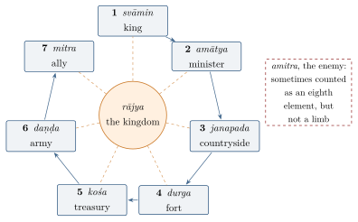

Chapter 4: The Saptāṅga Theory of the State¶
Indian political theorists did not write about “the state” as an abstraction. They wrote about the kingdom (rājya) and its “constituent elements” (prakṛti), and from the Arthaśāstra onwards the standard analysis lists seven of them. The doctrine came to be called the theory of the seven-limbed (saptāṅga) kingdom. It appears in the Arthaśāstra, the Manusmṛti, the Mahābhārata, the Yājñavalkyasmṛti, Kāmandaka’s Nītisāra and many later works, and it gave Indian political writers a shared vocabulary for analysing the strength and weakness of kingdoms. This chapter sets out the seven elements, the debates about their relative importance and about the calamities that afflict them, and the uses to which historians have put the scheme.
4.1 The Seven Elements¶
Book 6 of the Arthaśāstra opens with a terse list: “The king, the minister, the countryside, the fort, the treasury, the army and the ally are the constituent elements” (svāmy-amātya-janapada-durga-kośa-daṇḍa-mitrāṇi prakṛtayaḥ, AŚ 6.1.1). The Manusmṛti gives the same seven in verse and introduces the image of limbs:
Manusmṛti 9.294
svāmyamātyau puraṃ rāṣṭraṃ kośadaṇḍau suhṛt tathā
sapta prakṛtayo hy etāḥ saptāṅgaṃ rājyam ucyate
“The lord, the minister, the fort, the realm, the treasury, the army and the ally — these are the seven constituents; a kingdom is said to have seven limbs.”
The list is ordered: each element is, by default, more important than the one after it. The order follows the logic of a monarchical state seen from the top. The king (svāmin, “lord, owner”) rules through his ministers (amātya); together they govern a populated territory (janapada, “countryside, realm”); the territory is defended by fortified centres (durga); its resources fill the treasury (kośa); the treasury pays for the army (daṇḍa, literally “the rod”); and allies (mitra) extend the king’s power beyond his frontiers. The enemy (amitra) is sometimes counted as an eighth element, since a king’s policy is defined in relation to him, but he is not a “limb” of one’s own kingdom. Figure 4.1 sets out the scheme.

4.1.1 Elements, Not Institutions¶
It is important to see what the scheme is and is not. It does not distinguish legislative, executive and judicial functions, nor does it describe any body with power over the king. Its unit of analysis is the king’s resources: human (the king himself, the ministers, the people), material (the territory, the forts, the treasury) and military (the army, the allies). It is a theory of power and its sources, written for a ruler who wishes to preserve and increase his power — which is exactly what the Arthaśāstra says it is (Chapter 3). Each element has its ideal “excellence” (sampad), and the king’s task is to cultivate the excellences of his own elements and exploit the weaknesses of his enemy’s.
4.2 The King¶
The king is the first element, and the Arthaśāstra lists the qualities of an ideal ruler at length (AŚ 6.1.3–6). They fall into four groups:
-
Qualities that attract (ābhigāmika): high birth, good fortune, intelligence, courage, respect for elders, righteousness, truthfulness, keeping promises, gratitude, generosity, energy, firmness, a council of good quality, and a wish to be trained;
-
Qualities of intellect (prajñā): the desire to learn, attentive listening, grasping, retention, understanding, reflection, and the ability to reject what is false and hold to what is true;
-
Qualities of energy (utsāha): bravery, resentment of injury, speed and skill;
-
Personal excellence (ātmasampad): eloquence, boldness, memory, strength, self-control, and freedom from the vices of lust, anger, greed, obstinacy, fickleness and the like.
The list repeats the teaching of Book 1 that the king’s self-discipline is the foundation of government (Chapter 3). It also explains why the king’s calamities are the gravest of all: in the Arthaśāstra’s words, the king “appoints the minister, the chaplain and the rest” and, being himself endowed with excellences, makes the other elements excellent (AŚ 8.1.13, 8.1.16). The Mahābhārata and Kāmandaka say the same in many forms: as the king is, so are his people.
4.2.1 Princes, Succession and the Royal Household¶
Because the king is the first element, his safety and the succession are matters of state. The Arthaśāstra devotes chapters to the guarding of princes and to the conduct of a prince out of favour (AŚ 1.17–18). It reports a teacher’s opinion, attributed to Bhāradvāja, that princes are like crabs, which devour their begetter, and should therefore be watched closely or even done away with if they show disaffection; other teachers object that such killing is cruel and destroys the royal line, and recommend confinement or banishment to the frontier. Kauṭilya rejects these harsher proposals and recommends instead careful education, the use of secret agents to test their loyalty and to steer them away from vices, and the appointment of a worthy prince as heir. A prince who falls under suspicion is to submit patiently and seek reconciliation, unless his life is threatened. Book 5 discusses what ministers should do if the king falls mortally ill or dies: they should conceal his death until the succession is secured and the heir installed.
The royal residence itself is a place of danger. The text describes the layout of the palace with escape routes and secret passages, the precautions against fire and poison, and the testing of food and medicines; it advises the king to meet his queens only after their attendants have been checked, citing legendary kings killed by wives in their own chambers (AŚ 1.20–21). These chapters, more than any others, show the climate of suspicion in which the text imagines royal power to operate.
4.3 The Ministers¶
The second element covers the senior officers through whom the king governs. The Arthaśāstra distinguishes the counsellors (mantrin), with whom the king deliberates on policy, from the wider body of ministers (amātya) who head the administration, and from the council of ministers (mantripariṣad). It discusses how many counsellors a king should consult and reports the opinions of earlier schools on the size of the council — twelve according to the Mānavas, sixteen according to the Bārhaspatyas and twenty according to the Auśanasas — before concluding that it should be “according to capacity” (AŚ 1.15). It warns that secret deliberation must be protected from leaks and that the king should not deliberate alone or with too many.
4.3.1 Counsel¶
The Arthaśāstra gives great importance to counsel (mantra). All undertakings, it says, should be preceded by deliberation, and the place of deliberation should be secluded, so that not even birds can see it; it records stories of secrets betrayed by parrots and mynas, and by people who overheard or read signs (AŚ 1.15). Deliberation has five aspects: the means of starting an undertaking, the resources of men and material, the determination of place and time, provision against failure, and accomplishment. The king should consult his counsellors singly and together, weigh their opinions, and act promptly once a decision is made, for delay allows secrets to leak. A well-known verse observes that rulership can be accomplished only with assistance, for a single wheel does not turn; the king should therefore appoint counsellors and listen to their opinions (AŚ 1.7.9). The Manusmṛti likewise remarks that even an easy task is hard to accomplish alone, how much more a kingdom (7.55).
4.3.2 The Secret Tests¶
Ministers are appointed after their qualities have been examined and are tested through secret trials called upadhā (AŚ 1.10):
-
the test of righteousness (dharmopadhā): the chaplain, pretending to have been dismissed for refusing to officiate for an unworthy person, tries to persuade each minister to join in overthrowing the “unrighteous” king;
-
the test of wealth (arthopadhā): an army officer, pretending to have been dismissed, tempts them with money to join a plot;
-
the test of lust (kāmopadhā): a female ascetic in the king’s service tells each minister that the chief queen desires him;
-
the test of fear (bhayopadhā): the ministers are imprisoned on a pretext, and an agent among the prisoners then tries to incite them to rise against the king.
Those who pass are assigned to posts suited to the test they passed. The text records the objection that a king should not corrupt innocent men by suggesting treason to them, and it insists that the king should never make himself or his queen the object of such a test; the tests are carried out through agents. The passage shows both the sophistication of the text’s thinking about loyalty and the climate of suspicion in which its ideal court operates.
4.4 The Countryside and Its People¶
The janapada is the populated territory, the source of produce, revenue and soldiers. Its excellences include a good location, capacity to support the population and the army, defensibility, fertile land, mines, forests and pasture, good communications, and a population that is industrious, loyal and composed largely of cultivators and of “low” (avara) varṇas who can be made to work — a frank statement of the text’s assumption that a strong kingdom rests on a subordinate labouring population (AŚ 6.1).
Book 2 describes the settlement of new territory (janapadaniveśa): the king should found villages of 100 to 500 families, “consisting mostly of Śūdra cultivators”, by bringing people from elsewhere or by drawing off surplus population from his own land; he should grant tax remissions to new settlers, give land to those who will cultivate it and take it away from those who do not (AŚ 2.1). The territory is organised in a hierarchy of administrative centres: a sthānīya for 800 villages, a droṇamukha for 400, a khārvaṭika for 200 and a saṃgrahaṇa for every 10 (AŚ 2.1.4). The collector (samāhartṛ) divides the countryside into four divisions, each under an officer (sthānika), with accountants (gopa) responsible for groups of five or ten villages who keep records of land, households, livestock, income and expenditure (AŚ 2.35). Whether any historical kingdom ever administered its villages in this way is unknown; the scheme is the author’s ideal.
4.5 The Fort¶
The fort (durga) is both the fortified capital and the network of strongholds that protect the frontier. The Arthaśāstra (2.3) classifies forts by their natural defences into four kinds: water forts (audaka), on islands or surrounded by water; mountain forts (pārvata); desert forts (dhānvana); and forest forts (vanadurga). It gives detailed instructions on moats, ramparts, walls, towers and gates, and on the layout of the fortified city with its royal palace, its quarters for officials, artisans and the different varṇas, its temples and its markets (AŚ 2.3–4).
The Greek envoy Megasthenes described Pāṭaliputra, the Mauryan capital, as a city stretching along the Ganges, surrounded by a moat and by a timber wall with 570 towers and 64 gates; his account survives in the Indica of Arrian (2nd century CE). Excavations at Patna have found remains of timber palisades. Megasthenes’ Pāṭaliputra and the Arthaśāstra’s model fort share some features, but the text does not describe that city, and the resemblance should not be used to date the text (Chapter 3).
4.6 The Treasury¶
“All undertakings depend on the treasury” (kośapūrvāḥ sarvārambhāḥ, AŚ 2.8.1): the Arthaśāstra’s realism about money is one of its best-known features. The treasury is filled from the land tax, customs and tolls, fines, the profits of state enterprises, and a range of other levies (Chapter 6). Its excellence lies in being acquired lawfully, being full of gold, silver, gems and coin, and being able to sustain the state through a long calamity (AŚ 6.1).
The texts urge moderation in filling it — Manu’s king takes his tax little by little, like the leech, the calf and the bee (Manu 7.129) — but the advice is prudential, and the Arthaśāstra pairs it with methods of extracting money by deceit in an emergency (Chapter 6).
4.7 The Army¶
Daṇḍa means both coercive power and its main instrument, the army. The traditional Indian army had four arms (caturaṅga): elephants, chariots, cavalry and infantry. The Arthaśāstra classifies troops by their origin (AŚ 9.2): hereditary troops (maula), hired troops (bhṛta), troops supplied by corporations or guilds (śreṇī), troops of an ally (mitra), troops won over from an enemy (amitra) and forest troops (aṭavī). Each earlier type is preferable to the later, because more reliable. The ideal army is hereditary, loyal, well paid, obedient, used to hardship and mainly of Kṣatriyas, though the text also considers armies of other varṇas. War and military organisation are treated in Chapter 7 and, for military history, in Volume 20 of this series.
4.8 The Ally¶
The last element is the ally. The best ally is one whose friendship is hereditary rather than recent, who is constant, under the king’s control, powerful, and able to mobilise quickly — an ally who will not turn against one when one is in difficulty (AŚ 6.1). The Arthaśāstra knows that alliances are interested: in its theory of the circle of kings, the neighbour is a natural enemy and the neighbour’s neighbour a natural ally, and an ally may himself become a rival if he grows too strong (Chapter 7).
4.9 The Calamities of the Elements¶
Book 8 of the Arthaśāstra analyses the “calamities” (vyasana) that can afflict each element: a king’s vices, illness or captivity; disaffection or treachery among ministers; famine, epidemic, flood or revolt in the countryside; a damaged fort; a depleted treasury; a defeated, unpaid or mutinous army; an unreliable ally. The book is constructed as a series of debates in which earlier teachers argue that, in a given pair, the calamity of the later element is worse than that of the earlier. Bhāradvāja, for example, holds that a calamity of the minister is worse than one of the king, because the minister does the actual work of government. Kauṭilya generally answers that the canonical order holds — a calamity of the king is worse, because the king appoints and controls the minister — while accepting that the gravity of a calamity depends on its kind and extent. Book 8 also discusses the king’s vices in detail: hunting, gambling, women and drink, the “vices born of desire”, and verbal abuse, physical violence and the destruction of property, the “vices born of anger” (Kangle 1960; Olivelle 2013).
4.9.1 Calamities of the Countryside and the Army¶
The later chapters of Book 8 discuss the calamities of the other elements. Among the afflictions of the countryside, the text weighs the relative gravity of fire, flood, disease, famine and plagues of rats, insects and other pests, and debates whether a calamity affecting the leaders of the country or one affecting its people is worse. Among the calamities of the army it lists, in a long series of pairs, troops that are unpaid, sick, newly arrived, exhausted by long marches, dispirited after defeat, cut off from supplies, mixed with traitors or led by a disaffected commander, and asks which is easier to remedy. It also considers the calamities of the ally and of the treasury. The method throughout is comparative and practical: the king is to know which weaknesses can be tolerated and which must be repaired first.
4.10 The Enemy and the Three Powers¶
The saptāṅga analysis was a tool for comparing kingdoms. The Arthaśāstra describes the “excellences of the enemy” that make him easy to overcome: an enemy who is not of royal family, greedy, with a disaffected council and subjects, unrighteous, given to vices, lacking energy, trusting to fate, without allies and with a weak army is easy to defeat, whereas a powerful enemy with loyal subjects should be resisted only with allies (AŚ 6.1). The point of knowing the elements of one’s own state was to weigh them against those of others.
The same book introduces the “three powers” (śakti) of a king: the power of counsel (mantraśakti), which consists in knowledge and good advice; the power of might (prabhuśakti), consisting of the treasury and the army; and the power of energy (utsāhaśakti), the king’s personal drive and courage (AŚ 6.2; 9.1). The teachers are reported as ranking energy highest, but Kauṭilya argues that might is superior to energy and counsel superior to might, since a king who excels in counsel can overreach even an energetic and mighty opponent by intelligence. Success (siddhi) is correspondingly of three kinds. The doctrine reappears in Kāmandaka and in later works, and it shows the Arthaśāstra’s preference for intelligence over force.
4.11 The Saptāṅga in Other Traditions¶
The seven-element analysis was shared by other Indian traditions. The Śānti Parvan of the Mahābhārata discusses the seven limbs of the kingdom in several places, and Kāmandaka’s Nītisāra, the most widely read verse digest of the Arthaśāstra’s teaching, devotes chapters to each element. Jain authors on polity adopted it (Chapter 8).
The Tamil Tirukkuṟaḷ (c. 5th century CE) offers a related but distinct analysis. Its book on polity opens with a couplet that names six things a king must possess — an army, a people, wealth, ministers, allies and a fortress — and calls the king who has all six “a lion among kings” (Kuṟaḷ 381). The Kuṟaḷ then devotes chapters to each, and to the qualities of the king himself: learning, the avoidance of faults, the seeking of counsel from the wise, a just sceptre (ceṅkōl) and the avoidance of a cruel one. The parallel with the Sanskrit scheme is clear, but the Kuṟaḷ’s emphasis on the king’s ethical character and on the welfare of the people gives it a voice of its own; it belongs to a Tamil tradition of political ethics that also finds expression in the Caṅkam poems addressed to kings (Chapter 5).
4.12 An Organic Image¶
The image of the kingdom as a body with limbs recalls the organic theories of the state in European political thought, from Plato and Aristotle to medieval and early modern writers. The Indian texts, however, use the image sparingly, and their emphasis is on mutual dependence rather than on any idea of the state as a living whole with its own purposes. The Manusmṛti, after stating that each earlier element is weightier than the later, adds a qualification:
Manusmṛti 9.296
saptāṅgasyeha rājyasya viṣṭabdhasya tridaṇḍavat
anyonyaguṇavaiśeṣyān na kiṃ cid atiricyate
“In this seven-limbed kingdom, held together like the triple staff of an ascetic, no element is superior, because their qualities are of particular importance to one another.”
Each element is supreme for its own purpose, the text continues; the king must know the strength of each. Kāmandaka likewise describes the seven elements as mutually supporting. The doctrine therefore had a built-in tension: the order of the list expresses a hierarchy with the king at the top, while the image of the triple staff expresses mutual dependence.
4.13 The Saptāṅga in Later Thought and in Historiography¶
Besides the works just named, the law book of Yājñavalkya and the medieval digests of royal policy repeat the seven-element analysis, and inscriptions sometimes praise kings for the excellence of their seven limbs — a good example of the way a technical analysis from the śāstras passed into general political language.
Modern historians have used the scheme in two ways. Some, beginning with nationalist scholars in the early twentieth century, used it to argue that ancient India possessed a fully developed theory of the state comparable to that of Greece or Europe (Jayaswal 1924; Altekar 1958). Others have treated it as a heuristic for analysing how real kingdoms worked. R. S. Sharma used it to examine changes in the relative weight of the elements from the Mauryan to the post-Gupta period, and to argue that the growth of land grants to Brahmins and officials weakened the treasury and the army in early medieval kingdoms (Sharma 1959). Hartmut Scharfe’s history of the Indian state organises much of its material around the same elements (Scharfe 1989).
Such uses need care. The Mauryan state, as known from Aśoka’s inscriptions and from Megasthenes, had officials (mahāmātra, rajjuka, prādeśika) and practices that only partly match the Arthaśāstra; the Gupta kingdoms had provincial governors (uparika), district officers (viṣayapati) and village headmen known from inscriptions, but there is no evidence that they consciously applied the saptāṅga model; and the Cōḷa kingdoms of the ninth to thirteenth centuries combined royal government with powerful local assemblies (Chapter 16) that have no place in the scheme at all. The seven elements are best read as the categories through which Indian writers thought about royal power — a theory of the king’s resources — rather than as a description of how Indian states were organised.
Comparison: Modern Definitions of Statehood
The Montevideo Convention of 1933 defines a state in international law by four criteria: a permanent population, a defined territory, a government and the capacity to enter into relations with other states. A modern reader can map these onto the janapada, the svāmin and amātya, and the mitra of the Indian scheme. The purposes differ entirely: the Convention defines who counts as a subject of international law; the saptāṅga analyses the resources of a king for the purpose of increasing them.
4.14 Summary¶
-
The Arthaśāstra (6.1) and the Manusmṛti (9.294) analyse the kingdom into seven constituent elements: king, minister, countryside, fort, treasury, army and ally. The order is hierarchical, each element being normally more important than the next.
-
The scheme is a theory of the king’s resources, not a description of governmental institutions; it contains no element of popular representation or constitutional restraint.
-
Each element has its “excellences”; the text lists the qualities of the ideal king, the tests for ministers, the features of a good countryside, the kinds of fort, the qualities of a good treasury, army and ally.
-
Book 8 analyses the calamities that can afflict each element and debates their relative gravity; Book 6 adds the three powers of counsel, might and energy.
-
The Manusmṛti qualifies the hierarchy with the image of the triple staff: the elements support one another, and none is absolutely superior. The scheme passed into the epics, Kāmandaka, Jain works and inscriptions, and the Tamil Tirukkuṟaḷ has a related six-element analysis.
-
Modern historians have used the scheme to analyse historical states, with mixed success; it should be treated as an Indian way of thinking about royal power rather than as a blueprint of actual administration.
Further Reading¶
The basic texts are AŚ Books 6 and 8, in Kangle (1960) and Olivelle (2013), and Manu 9.294–297 in Olivelle (2005). Sharma (1959) offers the most searching historical analysis of the saptāṅga theory; Scharfe (1989) and Ghoshal (1959) survey its place in Indian political thought; Spellman (1964) and Drekmeier (1962) discuss it in the context of theories of kingship.